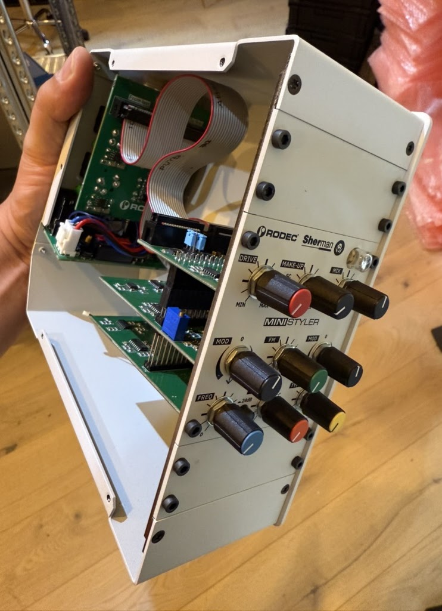
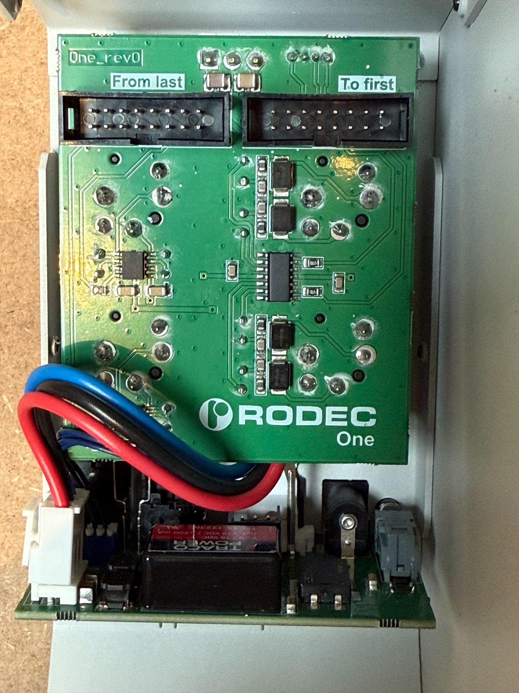
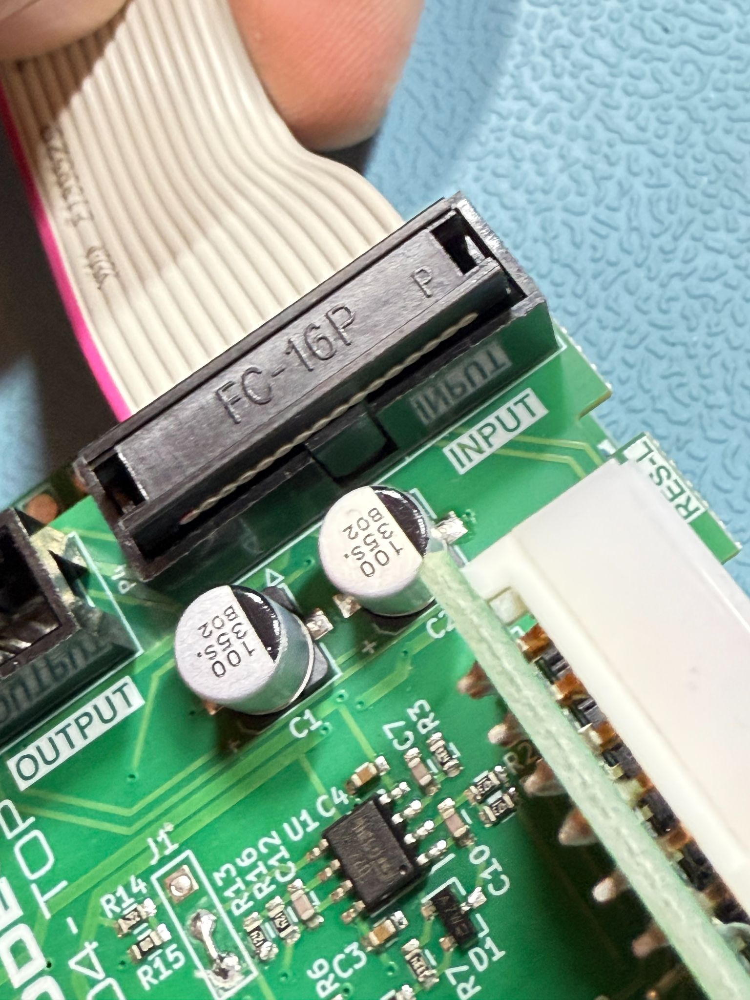
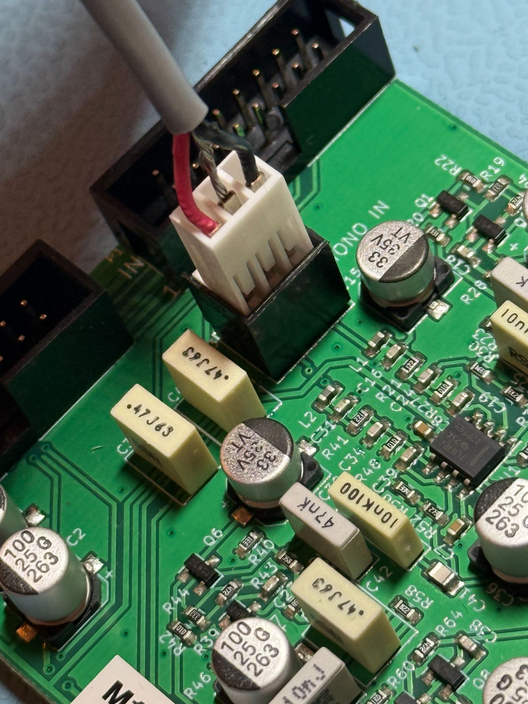

Installing Modules
The Rodec ONE has been designed with a balance of flexibility, durability, and ease of use in mind. Its modular format allows you to build a customized setup by combining different 100 series modules into one compact, powerful unit. To maintain reliability and performance, modules must be installed correctly and secured firmly in place.
Installing modules in the Rodec ONE is straightforward, but it requires some care and the right tools. Always follow the instructions step by step and observe the safety guidelines provided. This ensures your modules will perform at their best and that the Rodec ONE will remain stable and protected during long-term use.
Tools Required
Before beginning installation, prepare the following tools:
- 2 mm inbus (hex) tool – to remove the Rodec ONE side panels.
- 2.5 mm inbus (hex) tool – to secure modules with the supplied M3 × 6 cheese head screws (DIN 4762).
- Soft, non-abrasive cloth – to protect the chassis surface when placing it on its side during installation.
Safety Instructions
Before installing or removing modules, always observe the following precautions:
- Disconnect Power: Switch off the Rodec ONE and unplug the power supply.
- Avoid Damage: Never insert or remove modules while the unit is powered on.
- Use Proper Tools: Only use the recommended inbus (hex) tools and supplied screws.
- Prevent Static: Handle modules with care and avoid touching exposed circuitry.
Step 1 – Remove the Side Panel
- Use a 2 mm inbus (hex) tool to unscrew the fixing screws on one or both side panels.
- Remove the side panel(s) to gain access to the backplane and ribbon cables.
Step 2 – Connect the Ribbon Cables
Inside the Rodec ONE you will find two 16-pin ribbon cables:
- Input Ribbon Cable:
Connect this cable to the input connector of your first module. - Daisy Chain Connections:
If installing multiple modules, connect the output of the previous module to the input of the next module. - Final Connection:
Connect the “From Last” ribbon cable from the Rodec ONE to the output of your last module in the chain.
This creates a continuous signal path through all installed modules.

The backpanel of the Rodec ONE

Put the "to first" ribbon cable in the input of the first module
Step 3 – Secure the Modules
- Position each module in the chassis and align with the mounting holes.
- Use the supplied cheese head screws (DIN 4762 M3 × 6) to fix the modules into place.
- A 2.5 mm inbus (hex) tool is required to fasten these screws.
Step 4 – Connect Additional Internal Cables
In addition to the ribbon cables, the Rodec ONE includes:
- Phono Cable – Connects the RCA/ground input on the back panel to the optional M-101 phono module. (See illustrations for guidance.)
- MIDI Cable – Internal connection for modules equipped with MIDI functionality.
Once modules are installed and secured, replace the side panel(s) and tighten the screws. Your Rodec ONE is now ready for use.

Use the Phono cable to connect the optional M-101